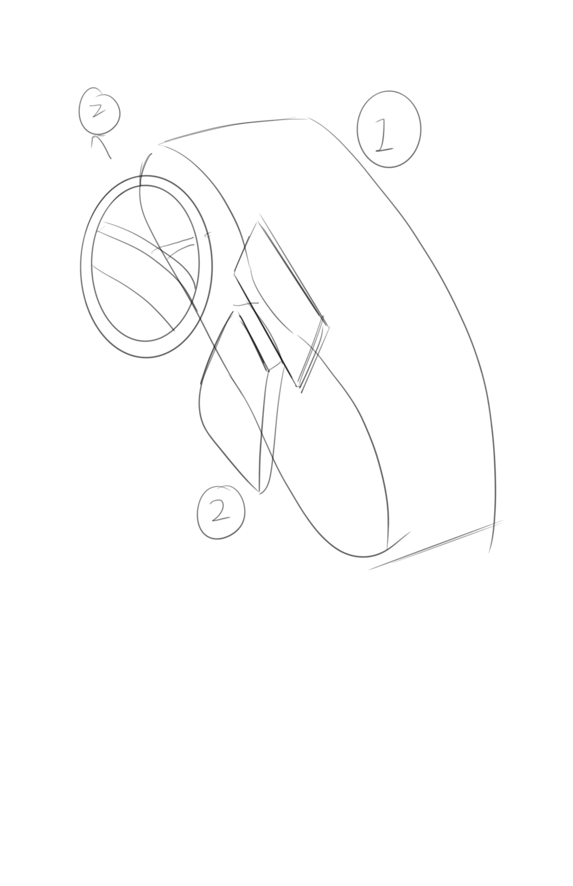
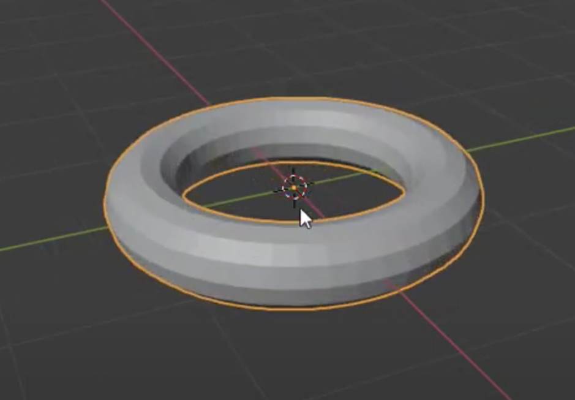
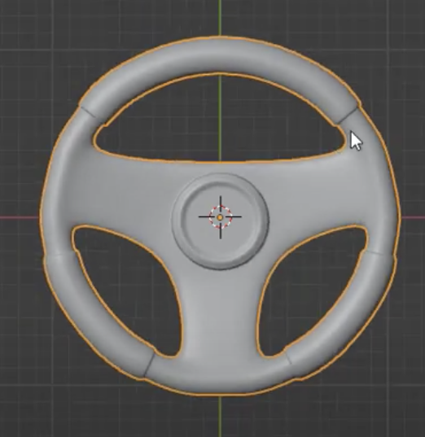
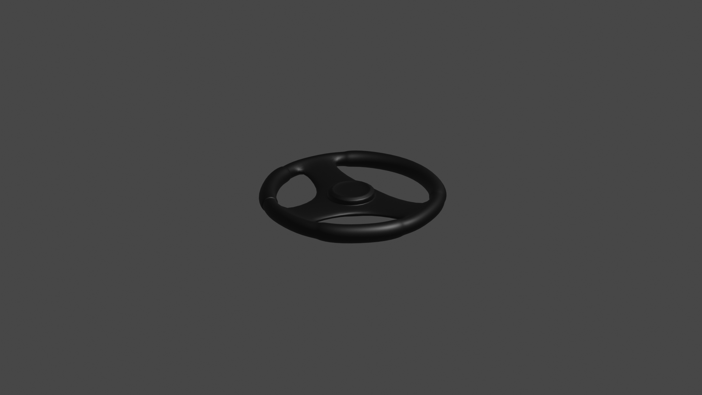

I plan to create a car dashboard interface by breaking it down into three main parts, as shown in the sketch below.
The main car dashboard will be the first part, followed by the steering wheel as the second part, and the display screen as the third part.
In order to create the steering wheel, I found an Youtube Video to follow
1. For the steeliing wheel, I first created an torus
2. Then I added individual origins using three faces inside the torus

3. Connect the individual origins

4. Extrude region and move

5. Add modifier subdivisioin surface and shade smooth

6. Extrude the top round part
Inset face

Extrude the steeling wheel pad part
Apply material and texture
add dashboard and car windshield, round screen

Apply material